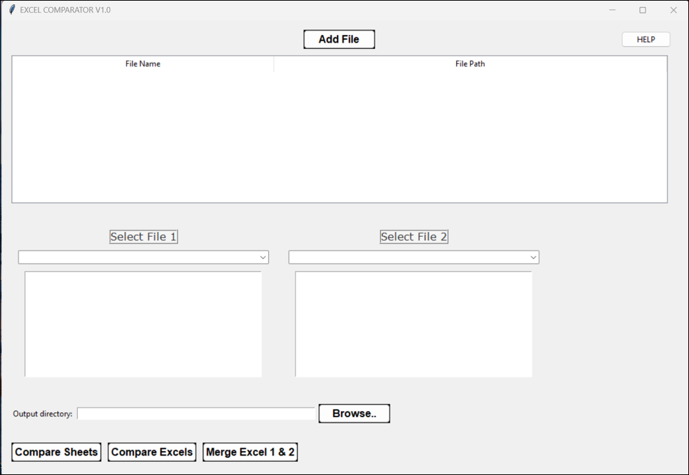
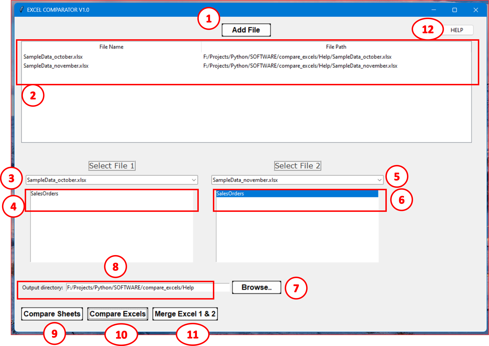
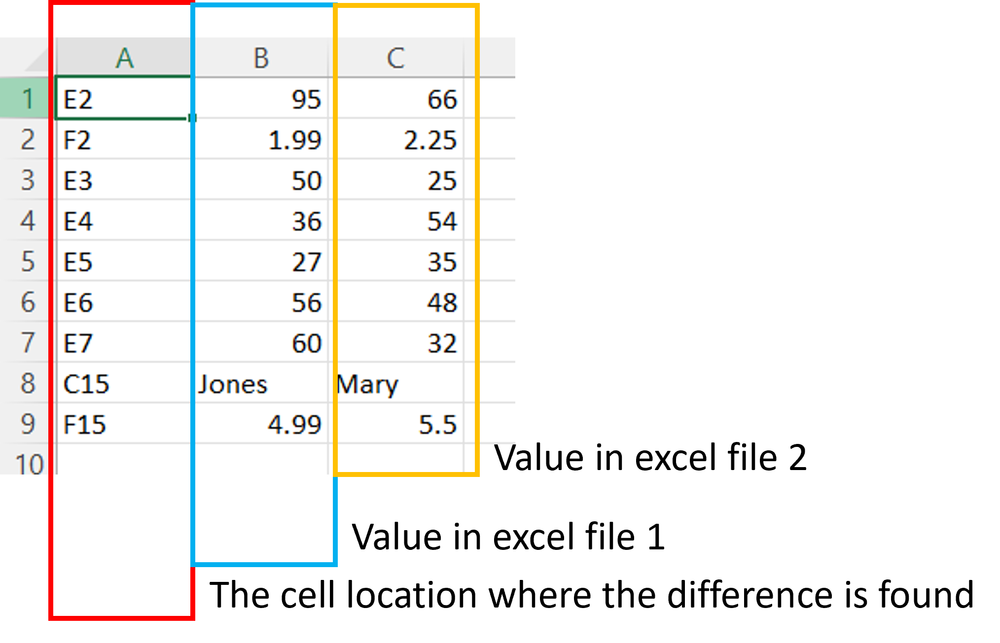
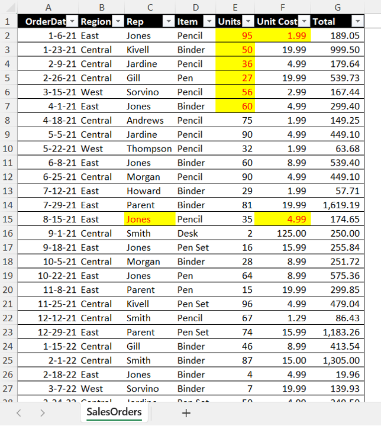

About
This tool is used in structural analysis where moment of inertia (MOI) is required to be computed for various cross-sections..
Download
Click the link to download the file
Features of the app:
- Select the type of cross-section.
- Enter user-defined dimensions.
- Displays MOI & centroid of the cross-section.
- Displays the cross-section graphically with above details.
Features to be added in the future:
- Adding more cross-sections.
- Adding sample dimensions.
- Displays more details and information.
- Export of information to file and to image.
Screenshots:
Figure 1: GUI (Right click and open image in new tab)
Figure 2: Follw the steps in the order shown
Steps to follow (Refer figure 2):
- Click on “Add File” > Browse and select an excel file. Repeat the process to add as many excel files as you need.
- Once Excel files are added, the file names are displayed in the view box along with their file path.
- From the drop down, select the excel file.
- From the view box, click on the sheet that you want to compare.
- Follow step 3.
- Follow step 4.
- Click on “Browse…” and select the directory where you want your output to be.
- The output path is displayed.
- “Compare Sheets” allows you to compare the differences in table format. See Figure 3.
- “Compare Excels” allows you to compare the sheets and highlight the differences in excel 1 and save it as a new excel file. See Figure 4.
- “Merge Excels” allows you to merge two excel files (all sheets from excel 1 and excel 2 into one common file).
- Click “HELP” to view this help document.
Figure 3: Output from “Compare Sheets” button - the table format which shows the differences in excel file 1 and excel file 2
Figure 4: Output from “Compare Excels” button - The differences are highlighted in yellow fill and red font colour.
